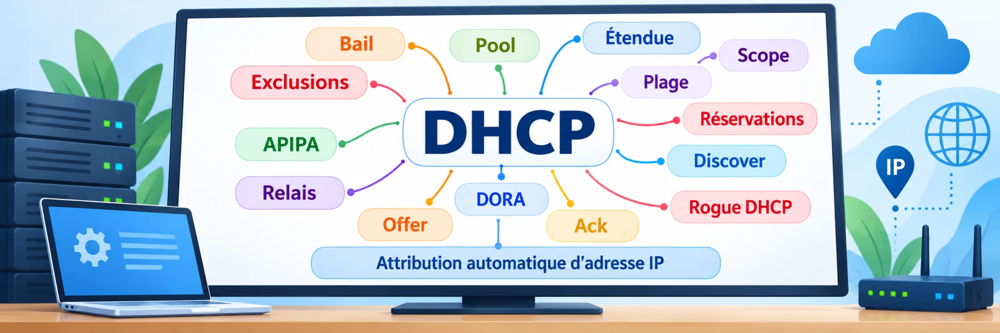

1. À quoi sert le DHCP ?
Un serveur DHCP permet à un appareil d'obtenir automatiquement sa configuration réseau, notamment une adresse IPv4, un masque de sous-réseau et un bail (durée pendant laquelle l'adresse lui est attribuée).
Il peut aussi fournir des options DHCP, comme l'adresse de la passerelle et celle des serveurs DNS. D'autres options existent selon les besoins du réseau.
Observer une configuration réelle
Sur un PC Windows, la commande ipconfig /all affiche ces informations. Voici un extrait de la configuration de REN-PC-01 :
C:\Users\chaoli>ipconfig /all
Configuration IP de Windows
Nom de l’hôte . . . . . . . . . . : REN-PC-01
Carte Ethernet Ethernet :
DHCP activé. . . . . . . . . . . : Oui
Configuration automatique activée : Oui
Adresse IPv4. . . . . . . . . . . : 192.168.1.26 (préféré)
Masque de sous-réseau . . . . . . : 255.255.255.0
Bail obtenu. . . . . . . . . . . : dimanche 18 octobre 2026 08:34:38
Bail expirant. . . . . . . . . . : lundi 19 octobre 2026 19:32:52
Passerelle par défaut. . . . . . : 192.168.1.1
Serveur DHCP . . . . . . . . . . : 192.168.1.1
Serveurs DNS. . . . . . . . . . . : 192.168.1.1
8.8.8.8
1.1.1.1Carte Ethernet Ethernet
- Nom de l'hôte
- REN-PC-01
- DHCP activé
- Oui
- Configuration automatique activée
- Oui
- Adresse IPv4
- 192.168.1.26 (préféré)
- Masque de sous-réseau
- 255.255.255.0
- Bail obtenu
- 18/10/2026 à 08:34:38
- Bail expirant
- 19/10/2026 à 19:32:52
- Passerelle par défaut
- 192.168.1.1
- Serveur DHCP
- 192.168.1.1
- Serveurs DNS
- 192.168.1.1
8.8.8.8
1.1.1.1
Comment lire cette configuration ?
- DHCP activé : Oui : le PC est configuré pour demander automatiquement une adresse IP.
- Serveur DHCP : indique quel équipement a attribué la configuration.
- Bail obtenu / Bail expirant : indiquent le début et la fin du bail.
Le bail DHCP : une durée à choisir
Un bail DHCP est une attribution temporaire d'adresse IP. Sa durée se règle sur le serveur DHCP, selon les appareils et leur fréquence de connexion. Le PC peut demander un renouvellement avant l'expiration.
Dans l'exemple ipconfig /all, le bail commence le 18 octobre 2026 à 08:34 et expire le 19 octobre 2026 à 19:32.
Les visiteurs restent peu de temps. Un bail d'environ 1 à 2 heures peut permettre de réutiliser plus rapidement les adresses après leur départ.
Les mêmes ordinateurs se reconnectent régulièrement. Un bail de plusieurs jours peut convenir : inutile d'imposer une durée très courte.
Avec beaucoup de visiteurs, un bail de 30 jours peut être trop long. Des adresses IP restent attribuées après le départ des visiteurs. Le serveur risque alors de manquer d'adresses disponibles.
À quoi servent la passerelle et le DNS ?
La passerelle permet de communiquer avec d'autres réseaux, notamment Internet. Les serveurs DNS permettent de trouver l'adresse IP correspondant à un nom comme www.decathlon.fr.
Une adresse IPv4 correcte ne garantit donc pas l'accès à tous les services : la passerelle et les DNS doivent aussi être correctement configurés.
Je me teste
Mission : un client souhaite modifier le réseau local de sa box Internet. Commence par relever la configuration de son PC, configure la box, puis vérifie que le PC reçoit les nouvelles informations DHCP.
- Adresse LAN de la box :
192.168.1.1, masque255.255.255.0 - Plage DHCP :
192.168.1.151à192.168.1.199 - DNS principal :
192.168.1.1, DNS secondaire :8.8.8.8 - Durée du bail : 1 heure au lieu de 24 heures
Relever la configuration actuelle du PC
Le PC du client utilise DHCP. Relève sa configuration initiale pour pouvoir la comparer à celle obtenue après l'intervention.
Chargement du laboratoire…
Configurer la box Internet
Vérifier la nouvelle configuration du PC
Libère l'ancien bail DHCP, demande une nouvelle configuration, puis vérifie les adresses, les DNS et la durée du bail dans ipconfig /all.
Aucune nouvelle configuration relevée.
Contrôler la mission
La vérification indique quels paramètres sont corrects et lesquels sont à revoir. Elle ne remplit pas les champs à ta place.
2. DORA : les 4 messages du DHCP
Lorsqu'un PC demande une configuration réseau, il échange quatre messages avec le serveur DHCP. Les premières lettres de leurs noms forment le mot DORA.
Je me teste
Choisis une réponse pour chaque situation.
3. Plage, exclusion et réservation
Le serveur DHCP distribue des adresses IPv4 aux appareils du réseau. Trois réglages permettent de décider quelles adresses sont disponibles et à quels appareils les attribuer.
La plage DHCP : les adresses disponibles
La plage DHCP (ou étendue) est l'ensemble des adresses que le serveur peut attribuer aux clients. Dans le réseau 192.168.20.0/24, les adresses des appareils vont de .1 à .254.
Le serveur DHCP, la passerelle et les autres équipements configurés en IP fixe sont de préférence en dehors de la plage distribuée, pour éviter les conflits d'adresses.
L'exclusion : des adresses à ne pas distribuer
Une exclusion interdit au serveur de distribuer une adresse ou un groupe d'adresses situés à l'intérieur de la plage DHCP.
Par exemple, les adresses 192.168.20.180 à 192.168.20.189 peuvent être gardées pour plusieurs équipements configurés en IP fixe. Exclure ne veut pas dire réserver à un appareil : le serveur ne distribue simplement pas ces adresses.
La réservation : toujours la même adresse sur ce site
Avec une réservation DHCP, un appareil reçoit toujours la même adresse IP sur ce réseau. Le serveur DHCP reconnaît l'appareil grâce à son adresse MAC.
Situation professionnelle : le mécanicien utilise sa valise en déplacement, parfois en 5G. À l'atelier, elle se connecte au Wi-Fi et reçoit 192.168.20.60 grâce à sa réservation. Les règles du pare-feu associées à cette adresse peuvent alors s'appliquer. Sur un autre site, elle peut recevoir une autre IP.
À retenir : l'exclusion interdit de distribuer une adresse ; la réservation attribue une adresse précise à un appareil identifié.
Je me teste
Configure le serveur DHCP puis vérifie le résultat grâce aux demandes des clients. Les deux exercices sont indépendants.
4. VLAN et DHCP
Pourquoi les VLAN ? Un VLAN forme un domaine de broadcast distinct. Lorsqu'un PC envoie un broadcast, le switch le diffuse uniquement aux autres ports de ce VLAN. Cela limite la diffusion des broadcasts et isole les différents réseaux locaux.
Le problème DHCP : un PC commence par envoyer un DHCP Discover en broadcast. Même avec le routage inter-VLAN, le switch L3 ne transmet pas automatiquement ce broadcast au serveur DHCP situé dans le VLAN 99.
La solution : un relais DHCP (IP helper) configuré sur les interfaces VLAN 10 et 20 reçoit les demandes et les transmet au serveur DHCP central en unicast. Le serveur sélectionne l'étendue correspondant au réseau d'origine grâce à l'adresse du relais (giaddr).
Je me teste
Choisis une réponse pour chaque situation.
5. VPN et DHCP
Le besoin : l'entreprise Cyneria possède un siège à Rennes et deux sites distants, Pacé et Bruz. Un serveur DHCP central à Rennes peut attribuer les configurations IPv4 de ces trois réseaux.
Le problème : les messages DHCP Discover sont des broadcasts locaux. Ils ne traversent pas Internet ni les tunnels VPN pour atteindre directement le serveur de Rennes.
La solution : chaque site distant possède un routeur avec relais DHCP (IP helper). Il reçoit le Discover sur le réseau local et transmet la demande en unicast dans le tunnel VPN. Le serveur utilise l'adresse du relais (giaddr) pour choisir l'étendue correspondant au site, puis les réponses reviennent par le relais.
Deux possibilités : le DHCP centralisé simplifie l'administration mais dépend de la liaison VPN. Un DHCP local sur chaque site permet de continuer à distribuer des adresses si le VPN est coupé, au prix d'une administration supplémentaire.
Je me teste
Choisis une réponse pour chaque situation.
6. DMZ et DHCP
Exemple : la salle d'attente d'un cabinet médical. Les patients utilisent un point d'accès Wi-Fi pour consulter Internet. Leurs smartphones ne doivent pas accéder aux ordinateurs ni aux données médicales du cabinet.
Une DMZ est un réseau séparé du LAN, dont les communications sont contrôlées par un pare-feu. Dans cet exemple pédagogique, le Wi-Fi des patients est placé dans cette zone isolée. Les patients peuvent accéder à Internet, mais pas au LAN du cabinet. Les autorisations représentées dépendent de la configuration du pare-feu.
Le DHCP : le serveur DHCP reste dans le LAN (192.168.10.10). Un smartphone de patient diffuse son Discover dans la DMZ (192.168.50.0/24). Le point d'accès transmet ce message sur le réseau local, puis le relais DHCP (IP helper) du pare-feu l'envoie au serveur. Nous supposons que les communications nécessaires au relais sont autorisées.
Le serveur attribue une adresse de l'étendue visiteurs, avec un bail d'une heure. Le smartphone pourra essayer de renouveler son bail pendant sa présence dans la salle d'attente ; quitter le Wi-Fi ne libère pas nécessairement l'adresse immédiatement.
Je me teste
Choisis une réponse pour chaque situation.
7. APIPA
Quand un PC ne reçoit pas de réponse du serveur DHCP, il peut s'attribuer lui-même une adresse APIPA 169.254.x.x, sans serveur. Avec cette configuration, le PC ne peut normalement pas joindre les autres réseaux de l'entreprise ni Internet. Des échanges sur le réseau local restent possibles.
Comme dans DORA, le PC commence par envoyer un message Discover. En l’absence de réponse, après plusieurs tentatives, il peut utiliser APIPA. Il vérifie alors son adresse grâce à ARP et continue à rechercher un serveur DHCP.
Exemple réel sous Windows : résultat de ipconfig /all.
Je me teste
Exercice professionnel : dépanner un PC portable
Dans une entreprise, un salarié n'arrive plus à ouvrir les dossiers partagés depuis son PC portable. Le câble réseau est branché.
Ta mission : trouve pourquoi le réseau ne fonctionne pas et remets le PC en état de marche.
8. Diagnostic professionnel
Bonjour,
Depuis ce matin, les PC du VLAN 30 n'ont plus accès au réseau.
Les PC du VLAN 10 fonctionnent normalement.
Pouvez-vous trouver la panne et proposer une solution ?
Merci, Sophie Martin.